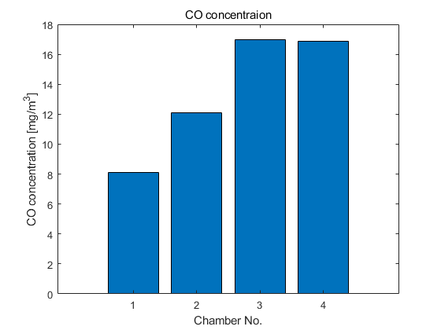
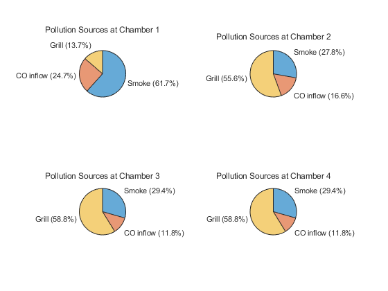

clc ; clear ; close all
Qa = 200 ; ca = 2 ; W_smoke = 1000 ;
Qb = 50 ; cb = 2 ;
Qc = 150 ; W_grill = 2000 ;
Qd = Qa+Qb-Qc ;
E13 = 25 ; E34 = 50 ; E24 = 5 ;
Q13 = Qa ; Q34 = Q13 ; Q42 = Q34 - Qd ;
A = [(Q13+E13) 0 -E13 0
0 (Qc+E24) 0 -(Q42+E24)
-(Q13+E13) 0 (E13+E34+Q34) -E34
0 -E24 -(E34+Q34) (E34+Q42+E24+Qd) ] ;
b = [ Qa*ca + W_smoke ; Qb*cb ; W_grill ; 0 ] ;
Inv_A = inverse(A) ; c = Inv_A*b ;
by_smoke = Inv_A(2, 1)*W_smoke ;
by_inlet = Inv_A(2, 1:2)*[Qa*ca ; Qb*cb] ;
by_grill = Inv_A(2,3)*W_grill ;
ratio = ones(3,4) ;
for i = 1:4
by_smoke = Inv_A(i, 1)*W_smoke ;
by_inlet = Inv_A(i, 1:2)*[Qa*ca ; Qb*cb] ;
by_grill = Inv_A(i, 3)*W_grill ;
ratio(1, i) = ( by_smoke/c(i) )* 100 ;
ratio(2, i) = ( by_inlet/c(i) )* 100 ;
ratio(3, i) = ( by_grill/c(i) )* 100 ;
end
figure
bar(c)
title("CO concentraion")
ylabel('CO concentration [mg/m^3]')
xlabel('Chamber No.')
figure
label = ["Smoke"; "CO inflow"; "Grill"];
subplot(2, 2, 1)
r = ratio(:, 1) ; tbl = table(label, r) ;
piechart(tbl, "r", "label")
title('Pollution Sources at Chamber 1')
subplot(2, 2, 2)
r = ratio(:, 2) ; tbl = table(label, r) ;
piechart(tbl, "r", "label")
title('Pollution Sources at Chamber 2')
subplot(2, 2, 3)
r = ratio(:, 3) ; tbl = table(label, r) ;
piechart(tbl, "r", "label")
title('Pollution Sources at Chamber 3')
subplot(2, 2, 4)
r = ratio(:, 4) ; tbl = table(label, r) ;
piechart(tbl, "r", "label")
title('Pollution Sources at Chamber 4')
 